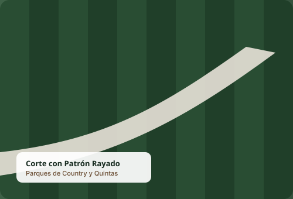
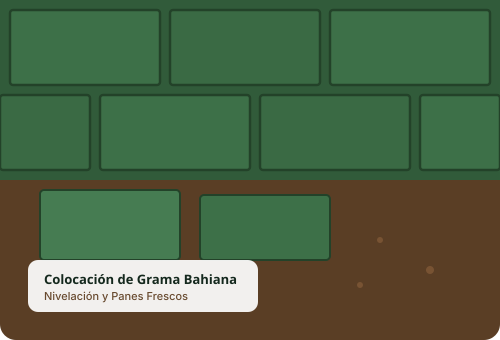
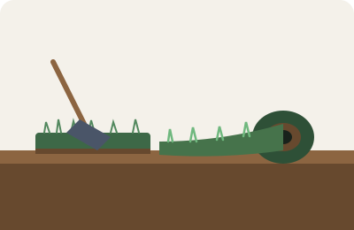

Resultados Reales
Galería de Acabados & Trabajos Realizados




Explicamos con total transparencia cómo trabajamos: maquinaria utilizada, preparación previa, frecuencia según época del año y tiempos de entrega.
Un jardín cuidado no es solo pasar la máquina: es cortar a la altura correcta según la temporada, proteger los canteros ornamentales, bordear de forma quirúrgica los zócalos de piscinas y soplar veredas para no dejar restos desparramados.

Instalamos césped fresco recién extraído del campo de cultivo. Realizamos la nivelación del terreno con aporte de tierra negra seleccionada, compactación y colocación trabada para que el parque quede alfombrado desde el primer día.
Para empresas, depósitos, fábricas y administraciones de loteos que necesitan mantener sus perímetros despejados, seguros y en regla con las normativas municipales de prevención de incendios y control de plagas.
Si tu lote estuvo sin mantenimiento durante meses o vas a empezar una obra y el pastizal sobrepasa la altura reglamentaria, realizamos el desmonte integral, rebaje de cercos perimetrales vivos y poda correctiva de arbolado.


Al ser un servicio móvil especializado en parques y terrenos, nos trasladamos con nuestro equipo directamente a tu propiedad.
Probá nuestro cotizador interactivo en la página principal: elegí tu tipo de lote, superficie y servicio para generar tu consulta en 30 segundos.